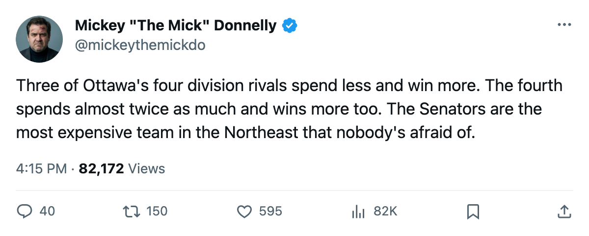
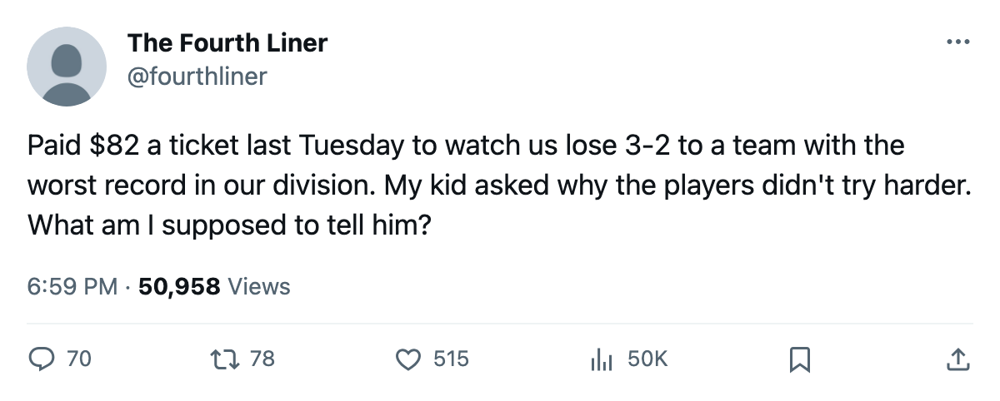

OTT
OTTOTTAWA OUTSPENDS THREE OF ITS FOUR DIVISION RIVALS. WINS LESS THAN ALL OF THEM.
$59.27M buys 19 points and $3.12M a piece. Buffalo, Montreal, and Boston all pay less, sit higher, and can still be beaten by Ottawa. Barely.
 Mickey "The Mick" DonnellyColumnist, ex-goalie · The Penalty Box
Mickey "The Mick" DonnellyColumnist, ex-goalie · The Penalty BoxOttawa's coach: 7-10-3, last in the Northeast, 5-6 at home, 3-7 on the road
Ottawa has spent $59.27M this season. They have 19 points. That is $3.12M per point, second-worst in a 30-club league, behind only Phoenix and the mess I wrote up on Friday.
What makes it worse isn't the per-point number. Phoenix at least has an excuse of a roster nobody wanted. Ottawa is in the Northeast, a division where they hand their wallet to three teams who run cheaper and sit higher in the table, and they still can't win.
Boston spends $60.32M and has 29 points. Montreal spends $54.89M and has 25. Buffalo spends $57.55M and has 22. Ottawa spends $59.27M and has 19. Every single one of those three clubs gets more points for fewer dollars. Ottawa sits last in the division, three points behind Buffalo, and they've done it while cutting cheques that make the other three look cautious.
They play at  Chicago Blackhawks on Saturday. Chicago is 1-10 at home. Ottawa is 3-7 on the road. I'd like to call this a matchup of equals, but at least Chicago's fans have the home ice they can't win on. Ottawa's 14,174 people per game are watching this at $82 a ticket. That's the third-highest price in the league, tied with six other clubs, and those other clubs are winning.
Chicago Blackhawks on Saturday. Chicago is 1-10 at home. Ottawa is 3-7 on the road. I'd like to call this a matchup of equals, but at least Chicago's fans have the home ice they can't win on. Ottawa's 14,174 people per game are watching this at $82 a ticket. That's the third-highest price in the league, tied with six other clubs, and those other clubs are winning.
The Bureau's Morale Scale puts Ottawa's club average at 90.6. That's sixth-lowest in 30 clubs. The guys in the room aren't having a good time. They aren't winning either. The only man on the roster who's doing anything is  Zdeno Chara85, who sits on the league's penalty list at 42 PIM in 21 games, 2.00 per night. Fighting is something to do when you don't have anything else.
Zdeno Chara85, who sits on the league's penalty list at 42 PIM in 21 games, 2.00 per night. Fighting is something to do when you don't have anything else.
Here's what gets me. Ottawa is 5-6 at home. Five wins in eleven games in front of their own people. They're 3-7 on the road. The division record is 2-3-2 in seven games, and the one club they've beaten twice is the one nobody beats anymore. They lost to Toronto in regulation and overtime. They lost to Boston. They split with Montreal. Against Buffalo they sit 1-0-0, but that's one game.
Doug Reimer will tell you Ottawa's development index is fine. Fine. What's fine about paying $3.12M a point while three division rivals do better at $2.62, $2.20, and $2.08? The index is a number that tells you a kid is improving. Nobody's indexing their way out of a $3.12M point.
Phoenix costs $3.69 a point and I already lit those people up. Ottawa isn't far behind and has fewer excuses because at least Phoenix only has four division games played. Ottawa has played seven and gone 2-3-2. They know who they are.

